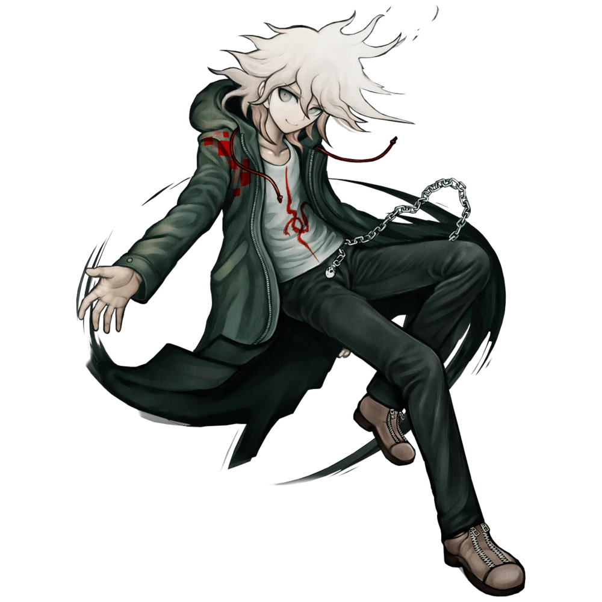
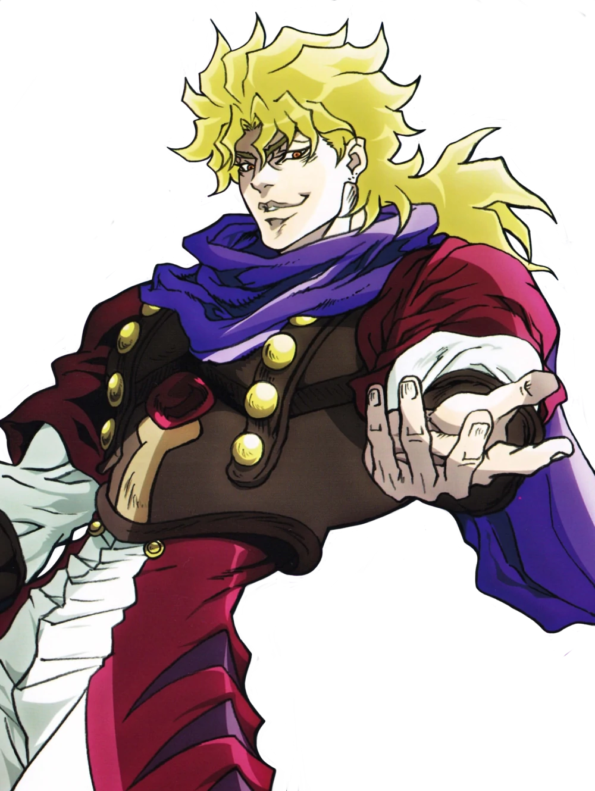
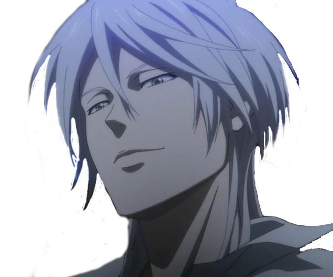
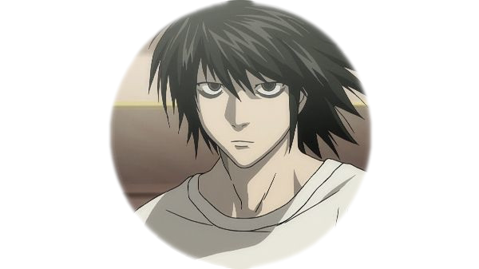
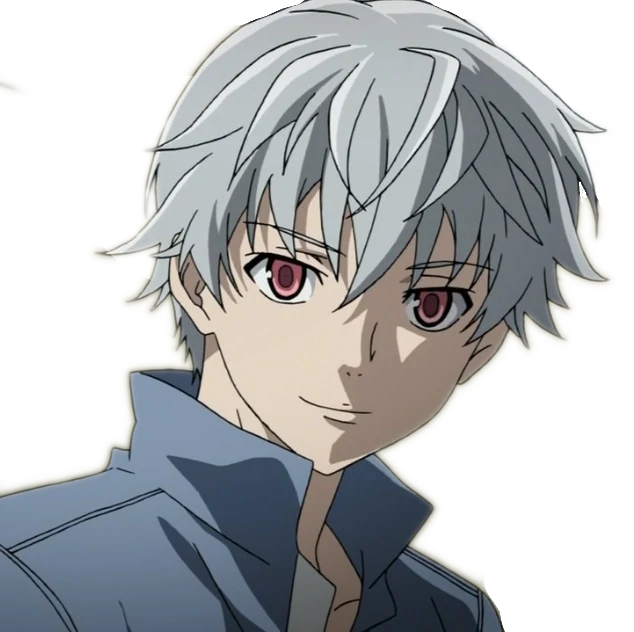

| Персонаж (аниме) | Характеристика |
|---|---|
|
Нагито Комаэда
(Данганронпа)  |
Абсолютный везунчик. Очень любит надежду и ненавидит отчаяние. "Я верю, что мои действия станут основанием надежды этого мира. И... если это правда произойдет... Восхваляйте меня. Рассказывайте всем, чего я достиг. Поставьте бронзовый памятник в мою честь. Называйте меня... Абсолютной Надеждой." |
|
Дио Брандо (ДжоДжо)  |
Главный антагонист "Призрачной крови" и "Крестоносцев звёздной пыли". Изначально, Дио — человек из низшего сословия, но с большими амбициями и жаждой власти. Став вампиром, а позже пользователем стенда, Дио собрал возле себя много приспешников. Несет ответственность за многие важные события, такие как смерть Джонатана и приобретение стендов семьи Джостаров. Таким образом, он является ключевым персонажем серии, чьё наследие сохраняется в течение нескольких частей. Дио – отец Джорно Джованны, протагониста Золотого Ветра, а также Унгало, Донателло Версуса и Рикиэля, приспешников Энрико Пуччи, антагониста Каменного Океана. |
|
Макисима Сёго (Психопаспорт)  |
Макисима Сёго - человек, преимущественно ответственный за инциденты, которые мешали миру Психо-Паспорта. Ему хотелось, чтобы все были свободны от системы Сивилла, которая, как он заявил, превратила человечество в «стадо овец». |
|
Эл Лоулайт (Тетрадь смерти)  |
Эл — Молодой человек худощавого телосложения, бледной кожей, с растрёпанными чёрными волосами и тёмными глазами. Одна из самых заметных его черт — мешки под глазами в следствие бессонницы. На нём надеты синие джинсы и белая кофта с длинными рукавами. Он почти никогда не носит обувь или носки, предпочитая ходить босиком, даже на публике, Когда он пришёл в школу Лайта Ягами босиком и сел на скамейку, не потрудившись надеть обувь даже когда он пошёл на сцену. |
|
Ару Акисэ (Дневник будущего)  |
Четырнадцатилетний школьник, учащийся в одном классе с Юкитэру Амано. Мечтает стать величайшим в мире детективом, посему ведёт свои частные расследования. |